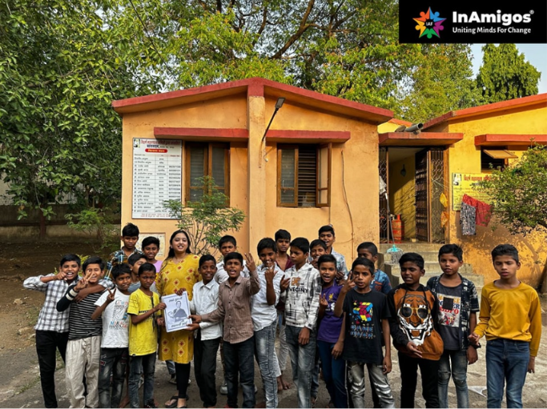
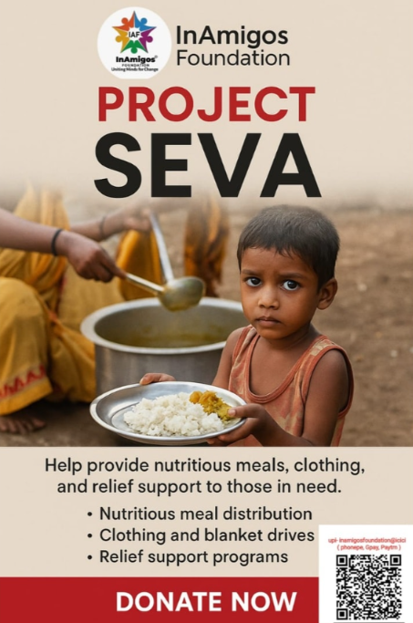
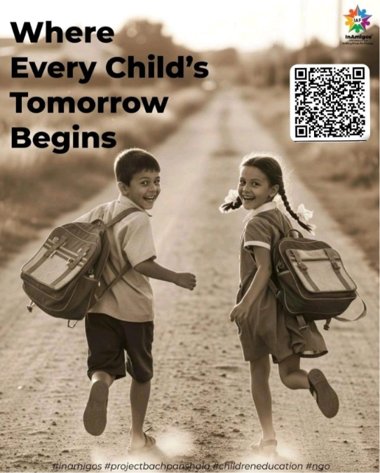
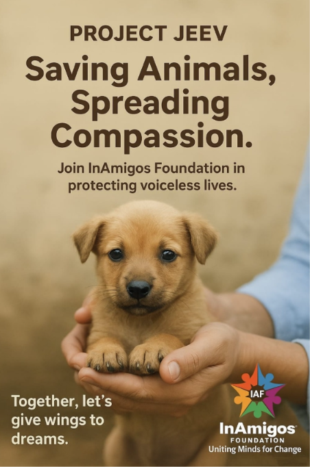
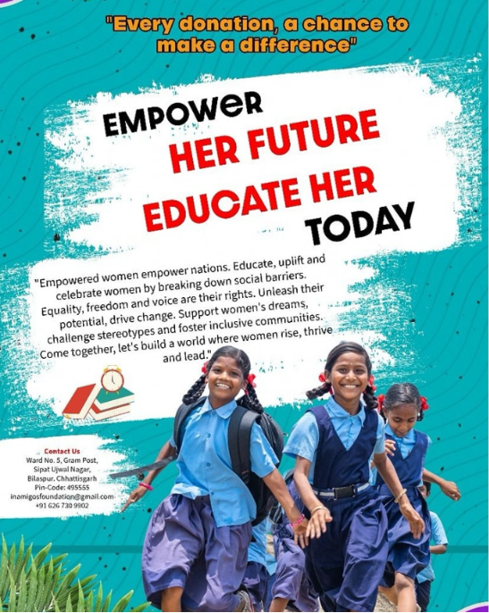
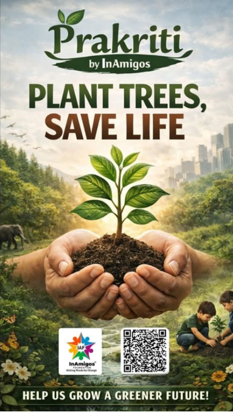
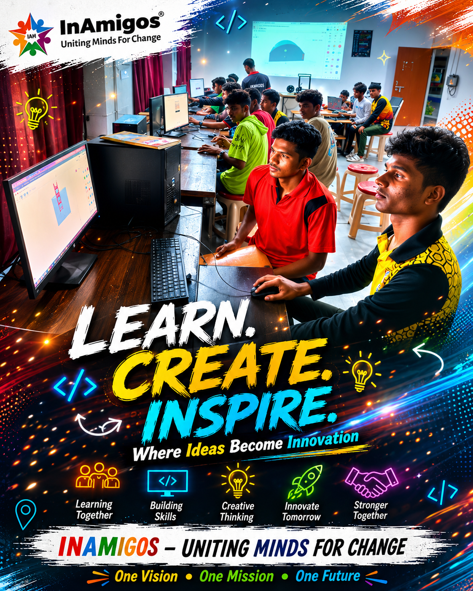
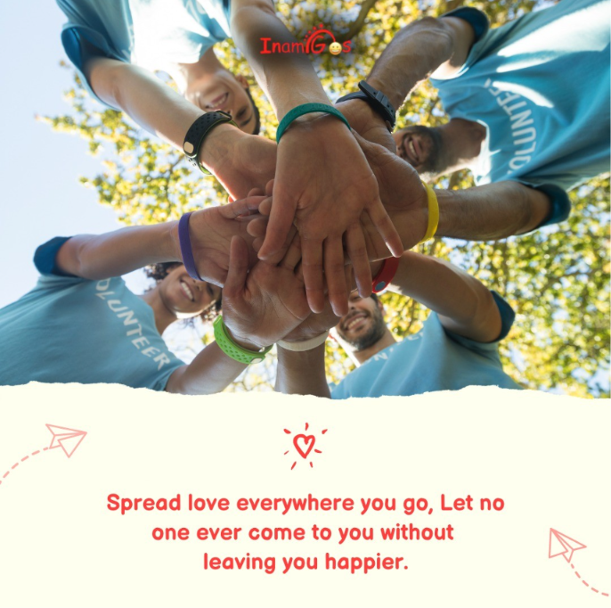

Support Our Cause
Make a Donation
Your contribution helps us continue our mission of providing food, education, and animal welfare. Scan the QR codes or use the details provided in the images below to make a donation.


.jpeg)

.jpeg)

Founded on September 23, 2020, by Govind Shukla in Bilaspur, Chhattisgarh, the InAmigos Foundation is committed to uplifting underprivileged populations. We operate with complete transparency and are proud to be 12A & 80G Certified, CSR-1 Registered, and ISO 9001:2015 Certified.
From providing essential education to children to caring for stray animals, our youth-driven volunteer network works tirelessly to bring sustainable, positive change to society.


Providing essential food, nutrition, and clothing to daily wage workers, the homeless, and underprivileged individuals to ensure no one sleeps hungry.

Bridging educational gaps by supporting underprivileged children with foundational schooling, basic digital literacy, and essential life skills.

Dedicated to animal welfare. We focus on the rescue, medical treatment, protection, and daily feeding of stray animals in our communities.

Empowering women through targeted skill development, pathways to financial independence, and crucial menstrual hygiene awareness camps.

Promoting environmental conservation and sustainability through massive tree plantation drives and local ecological awareness programs.

Focusing on youth skill development and enhancing employability by organizing and managing internship programs for students and graduates.
Through our 6 core projects, we aim to build a society where every individual has access to basic rights, every animal is treated with compassion, and our environment is protected for future generations.
Active Volunteers
Meals Served (SEVA)
Animals Rescued (JEEV)
Interns Trained (VIKAS)
Whether you want to intern under Project VIKAS, volunteer for Project SEVA, or support our causes financially, your contribution matters.

Your contribution helps us continue our mission of providing food, education, and animal welfare. Scan the QR codes or use the details provided in the images below to make a donation.